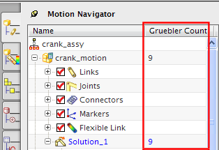

机构中的 Gruebler 数近似于它的自由度总数。
仿真中的 Gruebler 数总是显示在运动导航器的 Gruebler 数列中。

Gruebler 数方程为：
Gruebler 数 = (连杆数 * 6) — (被运动副或其它约束移除的自由度总数) — (运动驱动数)
机构中的初始 Gruebler 数为连杆数的六倍(各个连杆含有六个自由度)
运动副和其它约束将移除某些自由度，具体数量取决于运动副类型。
每个运动驱动将移除一个自由度
每一个在仿真中激活的柔性体连杆模态形状将增加一个自由度
|
注释 |
Gruebler 数并未考虑机构内所有影响约束的因素，求解器将考虑其它因素(包括运动副连接以及运动副方位)来确定机构真实的自由度。这个区别可能会导致自由度错误信息，即与显示的 Gruebler 数不一致，在这种情况下，软件将优先考虑使用自由度。 |